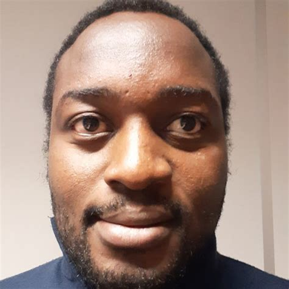

Fréjus Laleye
Opscidia
Biographie
Fréjus Laleye est chercheur en traitement automatique des langues et directeur technique (CTO) chez Opscidia. Formé en ingénierie informatique, il a consacré son doctorat à la reconnaissance vocale du fongbé, une langue tonale de la famille gbe. Il y a étudié le signal acoustique, la représentation des tons et la manière dont ces informations peuvent aider un système à transcrire des énoncés.
Avec son équipe, il a développé dès 2016 le premier système publié de reconnaissance automatique du fongbé parlé en continu. Il a ensuite étendu ce travail à la traduction vocale du fongbé vers le français. La collecte et l’annotation d’enregistrements alignés avec des traductions ont permis de constituer un corpus de 61 heures et de comparer des systèmes qui transcrivent puis traduisent à d’autres qui traduisent directement le signal audio.
Le projet J’aime Ma Langue prolonge ce travail à plus grande échelle. Fréjus Laleye a contribué à constituer un corpus vocal couvrant les douze départements du Bénin. Les transcriptions annotées avec les tons permettent d’étudier les variations entre locuteurs et de mesurer comment les modèles distinguent des mots dont le sens dépend de la hauteur de la voix.
Son parcours comprend également des travaux au CEA List et sur le traitement des dialogues médicaux en français. Après avoir dirigé la R&D en intelligence artificielle chez Opscidia, il y applique le traitement automatique des langues à la recherche, à l’analyse et à l’extraction d’informations dans la littérature scientifique.
Domaines de recherche
- Langues gbe
- Reconnaissance vocale
- Traduction de la parole
- Corpus pour les langues peu dotées